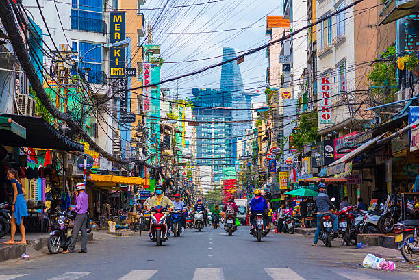

Are you looking for a thrilling and one-of-a-kind vacation destination?
Vietnam is the place to be! This colorful Southeast Asian nation is rich in culture, heritage, and exploration. There are numerous reasons to visit this amazing country, from the booming cities of Hanoi and Ho Chi Minh City to the beautiful beaches of Nha Trang and Hoi An. In this article, we will look at five interesting reasons why you should visit Vietnam. We will talk about the vibrant culture, breathtaking natural beauty, mouthwatering food, and intriguing activities that make Vietnam a must-see destination. Prepare to start making plans for your next trip to Vietnam!
Vietnam is a lovely country with a rich cultural and historical heritage. It is an excellent destination for travelers seeking an exciting and unique experience. There are lots of reasons why you should visit Vietnam, from its jawdropping landscapes to its vibrant cities. In this essay, I will go over five reasons why you should visit Vietnam.
Incredible Landscapes
Vietnam is a perfect location for some of the world's most beautiful landscapes.. From the lush green rice paddies of the Mekong Delta to the towering limestone mountains of Halong Bay, there is something for everyone. The country also has some of Southeast Asia's most beautiful beaches, with clear waters and white sand. Vietnam offers something for everyone, whether you want to relax on the beach or explore the countryside.
Delicious Cuisine
Vietnamese cuisine is among the world most delicious and diverse. Vietnam has it all, from the famous pho noodle soup to the delectable banh mi sandwiches. The country also has some of the world's best seafood, with fresh fish and shellfish trapped daily from the South China Sea. Vietnam seems to have it all, whether you want a full-course meal or a quick snack.
Rich Culture and History
Vietnam has a long history and culture, from the ancient temples of Hue to the bustling markets of Ho Chi Minh City. The country also has some of Southeast Asia's most beautiful pagodas and shrines, with intricate carvings and vibrant decorations. Vietnam is a must see, whether you are looking for an unique culture or a historical journey.
Affordable Prices
Vietnam is among the most cost effective Southeast Asian countries. There are numerous ways to save money while traveling in Vietnam, ranging from low-cost lodging to affordable transportation. The country also has some of the best street food in the world, with tasty dishes costing less than a dollar. Whether you want a cheap vacation or an extravagant vacation, Vietnam is the place to be!

Friendly People
Vietnamese people are one of the sweetest in the world. From the countryside to the cities, everyone is willing to help and openly discuss their heritage with visitors. The country also has some of the most welcoming people from Southeast Asia, with many local residents going out of their way to ensure visitors have a pleasant time. Whether you're looking for a pleasant chat or a supportive community, Vietnam does have something for everybody.
Conclusion:
Vietnam is a fantastic country that has something for everyone. There are numerous reasons to visit Vietnam, ranging from its spectacular landscapes to its scrumptious cuisine. Vietnam has something for everyone, whether you want a fun voyage or a soothing beach vacation. So, if you want to have a memorable experience, consider visiting Vietnam!